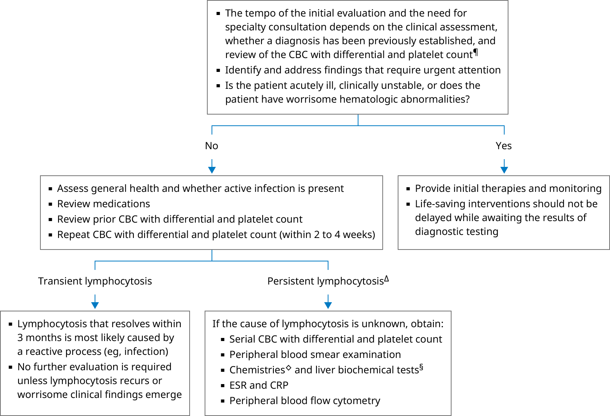

ALC: absolute lymphocyte count; ALT: alanine aminotransferase; AST: aspartate aminotransferase; CBC: complete blood count; CRP: C-reactive protein; ESR: erythrocyte sedimentation rate; WBC: white blood cell.
* Lymphocytes generally constitute 8 to 33% of WBCs in peripheral blood. The normal reference range for the ALC is usually ≥1000 cells/microL and ≤4000 cells/microL. Interpretation of a specific abnormal result should be based upon the reference range reported with that result.
¶ Lymphocytosis may be the sole abnormality in the CBC and blood smear, or it may be accompanied by abnormalities of other WBC types (eg, increased neutrophils, eosinophils, and/or monocytes) and/or other cell lines (red blood cells, platelets). Isolated lymphocytosis may be an incidental finding, polyclonal (in response to infection or inflammation), or monoclonal (malignant). Refer to the UpToDate table on the causes of reactive lymphocytosis.
Δ Asymptomatic patients with stable lymphocytosis and otherwise normal peripheral blood smear may be followed with serial CBCs (every 3 months). In general, reactive lymphocytosis can be expected to persist while the underlying inflammatory/infectious process is active. However, if lymphocytosis (ALC ≥5000/microL) persists ≥3 months, obtain hematology consultation to evaluate for a clonal process. Chronic lymphocytic leukemia may present as an isolated, incidentally discovered lymphocytosis.
◊ Glucose, blood urea nitrogen, creatinine, and electrolytes.
§ These include ALT, AST, bilirubin, and alkaline phosphatase.